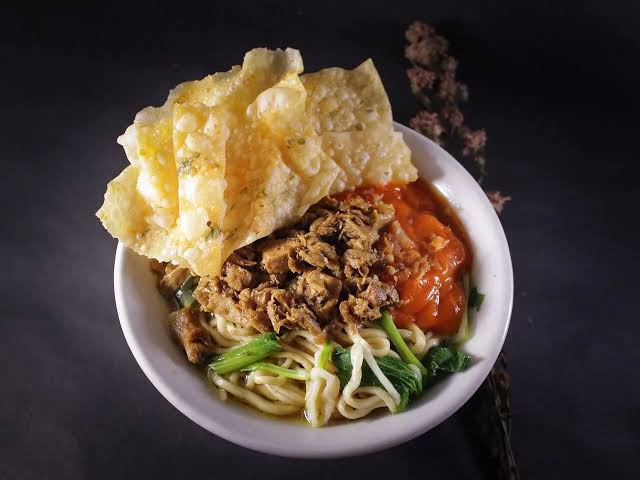

Resep Mie Ayam

Bahan-bahan:
- 500 gr mie basah
- 200 gr daging ayam, potong kecil
- 2 siung bawang putih, cincang
- 2 sdm kecap manis
- 1 sdm saus tiram
- 1 sdt garam
- 1/2 sdt merica
- Sayur sawi secukupnya
- Kaldu ayam secukupnya
- Minyak ayam (gorengan kulit ayam) secukupnya
Cara Memasak:
- Tumis bawang putih hingga harum, masukkan ayam lalu aduk sampai berubah warna.
- Tambahkan kecap manis, saus tiram, garam, dan merica. Aduk rata dan masak sampai matang.
- Rebus mie, tiriskan lalu beri minyak ayam.
- Rebus sawi sebentar lalu tiriskan.
- Sajikan mie dalam mangkuk, beri ayam, sawi, dan siram dengan kaldu panas.
- Tambahkan kerupuk pangsit dan sambal sesuai selera.